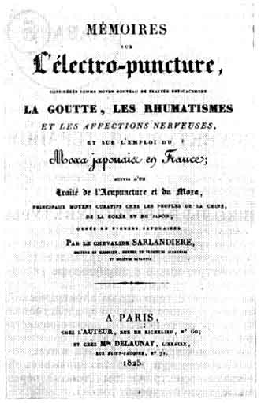
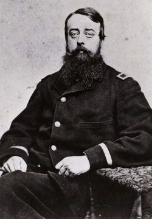

Introduction:
The history of acupuncture is often presented as a composite of legends, myths, personal interpretations and political biases. Perhaps the intention is to keep it simple and convincing.
On this page, we present the history based only on the factual material and physical evidence that illustrates the more interesting, intriguing and controversial evolutionary aspects that acupuncture has made through the centuries.
Philosophical Background
Practical applications of acupuncture techniques can be traced back to the dawn of civilization. Apparently, acupuncture was practiced in many ancient cultures around the world, as you will see on this page.
The Chinese formalized it and presented it into modern times. Acupuncture as a system of knowledge is deeply rooted in Chinese philosophy.
However, the notion of "unified" Chinese philosophy is inaccurate. In fact, it is a mixture of various ideologies and beliefs.
Confucianism, Taoism (Daoism), and Buddhism form the three main pillars of Chinese thought, keeping in mind that they are not monolithic but multifaceted traditions with complex internal divisions.
Confucianism, Taoism of all trends, different branches of Buddhism, all represent Chinese philosophy and heavily influenced Traditional Chinese Medicine and acupuncture.
These teachings have determined Chinese society for thousands of years. Acupuncture, as a medical system, was an integral part of this social environment. Without this social background, it would have been inconceivable.
The evolutions of the official policy would lift certain ideology while the other would fall out of favor. For instance, Confucianism was dominant philosophy when Buddhism entered China in the first century AD.
But two centuries earlier, the Chinese Emperor Qin Shi Huang burned most of the Confucian literature in the country and sentenced thousands of intellectuals to years of forced labor on the Great Wall as political prisoners, where most of them perished.
Traditional schools of acupuncture, with their diversity, sometimes appear inconsistent or contradictory. In reality, they bear influence of different philosophies and reflect different theoretical backgrounds.
This explains differences that we see in various acupuncture schools, their terminology, clinical interpretations and emphasis on different basic concepts.
First Physical Evidence
Ironically, the first physical evidence of acupuncture was found not in China but in central Europe.
In 1991 the scientific world was rocked by the discovery of "The Ice Man", a 5,300-year-old mummified man found in the Italian Alps along the border with Austria. The frozen body was remarkably well preserved.
One of the most remarkable discoveries was a complicated system of bluish-black tattoos running along his back, right knee and left ankle. The locations of the "tattoos" corresponded precisely to acupuncture points and meridians, including the 'master point for back pain'.
Apparently he suffered from back pain that was confirmed by a series of X-rays of his body, with evidence of acute arthritis in the lumbar spine. Otherwise he was in good health, he had all his teeth with no cavities. He was approximately 45 years old at the moment of sudden death...
More about First Physical Evidence
For the nine years, a group of scientists from the University of Graz in Austria examined the mummy's remains thoroughly, learning much about the everyday life of stone-age Europeans.
They published their findings in The Lancet in 1999 and later in Discover magazine.
Apparently, he suffered from the back pain that was confirmed by X-ray of his body with the evidence of arthritis in the lumbar spine.
These findings imply that acupuncture or a system of healing quite similar to it may have been in use in central Europe more than 2,000 years earlier than previously believed.
In addition, similar tattoos had been found previously on mummies in Siberia and South America. It raises some interesting questions as to where this form of care originated.
Quite possibly acupuncture was practiced in many ancient cultures worldwide. But only the Chinese formalized it and saved it into modern times
China & East Asia
Acupuncture's beginnings lie in China but there is a lot of contradictory information concerning the date of its genesis. What is certain is that acupuncture was used around 2000 BC in China.
Drawings dating from around 1600 BC reveal that sharpened bamboo and bronze needles were used in treatment. Excavations have uncovered sharpened stones dating from around 3000 BC which may indicate the beginnings of acupuncture.
The first medical account of acupuncture was NEI CHING SU WEN "The Yellow Emperor's Classic of Internal Medicine" which dates from about 200 BC.
Throughout the centuries, acupuncture flourished in China despite the periods when it was suppressed (from the Qing Dynasty to the Opium Wars: 1644-1840).
In the 20-th century, following the Revolution of 1911 Western Medicine was introduced in China. Acupuncture and herbs remained the only option in rural communities, and the term "barefoot doctor" emerged. In 1932 when Chang Khi Chek seized power in China, acupuncture was banned in the cities.
Chairman Mao took over in 1945 and Chang Khi Chek escaped to the island of Formosa (now Taiwan).
China was closed to the West and acupuncture was restored as the method of healing in a country deprived of antibiotics and western medical equipment.
From the 1970-s China's policy became more open, and its medical system benefits from modern technologies while remains loyal to the time-honored tradition.
Acupuncture in China History of Chinese Acupuncture in chronological order: dates & events
During the excavation of archeological sites dated back to the Shang Dynasty (Approximately 1000 BC) bronze needles were discovered. Hieroglyphs showed evidence of Acupuncture and Moxibustion.
Four gold needles and five silver needles were found in an ancient tomb dating back to 100 B.C.
The most significant milestone in the history of Acupuncture occurred during the period of Huang Di -The Yellow Emperor.
In a famous dialogue between Huang Di and his physician Qi Bo, they discuss the whole spectrum of the Chinese Medical Arts. These conversations would later become the monumental text - The Nei Jing (The Yellow Emperors Classic of Internal Medicine).
The Nei Jing is the earliest book written on Chinese Medicine. It was compiled around 200 B.C.
It consists of two parts:
The Su Wen (Plain Questions) -9 volumes - 81 chapters The Su Wen introduces anatomy and physiology, etiology of disease, pathology, diagnosis, differentiation of syndromes, prevention, yin-yang, five elements, treatment, and man's relationship with nature and the cosmos.
The Ling Shu (Miraculous Pivot,Spiritual Axis)- 81 Chapters The Ling Shu's focus is Acupuncture, description of the meridians, functions of the zang-fu organs, nine types of needles, functions of the acupuncture points, needling techniques, types of Qi, location of 160 points.
From 260-265 A.D., the famous physician Huang Fu Mi, organized all of the ancient literature into his classic text -Systematic Classics of Acupuncture and Moxibustion. The text is twelve volumes and describes 349 Acupuncture points. It is organized according to the theory of: zang fu, Qi and blood, channels and collaterals, acupuncture points, and clinical application. This book is noted to be one of the most influential text in the history of Chinese Medicine.
Acupuncture was very popular during the Jin, Northern, Southern, Dynasties (265-581A.D.). For generations the Xu Xi family were known as the experts in the art of Acupuncture. During this time period important texts and charts enhanced knowledge and application.
Acupuncture experienced great development during the Sui (581-618) and Tang (618-907) Dynasties.
Upon request from the Tang Government (627-649A.D.), the famous physician Zhen Quan revised the important Acupuncture texts and charts.
Another famous physician of the time, Sun Simio, wrote Prescription with a Thousand Gold for Emergencies (650-692 A.D). This text includes data on Acupuncture from various scholars. During this period Acupuncture became a special branch of of medicine.
Acupuncture schools appeared, and Acupuncture education became part of the Imperial Medical Bureau.
During the Song Dynasty (960-1279),
the famous physician Wang Weiyi wrote The Illustrated Manual on Points for Acupuncture and Moxibustion. This book included the description of 657 points. He also produced two bronze statues on which meridians and points were engraved for teaching purposes.
The Ming Dynasty (1568-1644) was the enlightening period for the advancement of Acupuncture. Many new developments included:
Revision of the classic texts
Refinement of Acupuncture techniques and manipulation
Development of Moxa sticks for indirect treatment
Development of extra points outside the main meridians
During that period the encyclopedic work of 120 volumes - Principle and Practice of Medicine was written by the famous physician Wang Gendung
In 1601 Yang Jizhou wrote Zhenjin Dacheng (Principles of Acupuncture and Moxibustion). This great treatise on Acupuncture reinforced the principles of the Nei Jing and Nan Jing. This work was the foundation of the teachings of G.Soulie de Morant who introduced Acupuncture into Europe.
From the Qing Dynasty to the Opium Wars (1644-1840), herbal medicine became the main tool of physicians and Acupuncture was suppressed.
Following the Revolution of 1911, Western Medicine was introduced and Acupuncture and Chinese Herbology were suppressed. Due to the large population and need for medical care, Acupuncture and herbs remained popular among the folk people, and the "barefoot doctor" emerged.
Acupuncture was used exclusively during the Long March (1934-35) and despite harsh conditions it helped maintain the health of the army of Chinese resistance.
In 1950 Chairman Mao (Mao Zedong, the leader of the Communist Party) officially endorsed Acupuncture and Traditional Chinese Medicine and authorized Acupuncture as an important element in China's medical system. Acupuncture became established in many hospitals.
In the same year, Comrade Zhu De reinforced Traditional Chinese Medicine with his book New Acupuncture.
In the late 1950's to the 1960's Acupuncture research continued with further study of the ancient texts, clinical effect on various diseases, acupuncture anesthesia, and all aspects of acupuncture's application and clinical effects.
From the 1970's to the present, Acupuncture continues to play an important role in China's medical system. China and Taiwan today play a leading role in developing traditional Chinese medicine. In these countries, there are some 232,000 traditional Chinese medical doctors and 50 institutes producing 30,000 traditional Chinese medical doctors annually.
Although acupuncture has become modernized, it preserves its bond with a philosophy established thousands of years ago.
Europe
Traditionally associated with China, Japan, and Korea, acupuncture is incorporated into medical practice in Europe. Acupuncture was introduced in Europe by European physicians who brought it from Far Eastern colonies. That mode of introduction made it credible.
The first known European acupuncture publication was dated 1658 and was published in Holland. The Dutch doctor Jakob de Bondt published an extensive, six volume work about the history of nature and medicine in East India.
Modern medicine as we know it today did not exist yet, and there were 300 years of parallel development, interaction, and scientific scrutiny.
There are similarities and differences in the contexts of European and Chinese acupuncture. The similarity is that there is close communication and contribution between acupuncturists practicing in Europe and China. European professional's practice based on the principles of Traditional Chinese Medicine. Chinese practitioners promptly accommodate and incorporate new European techniques such as electropuncture and concepts like auriculopuncture.
The difference is that European acupuncture coexists with highly advanced, state-of-the-art modern medicine, and Chinese acupuncture does not. Acupuncture in China quite often aims to replace conventional medicine to fill the gaps and deficits in healthcare.
Acupuncture in Europe "The recycling of knowledge and data, often forgotten for periods, occurs from century to century and decade to decade. This recycling is necessary because humankind seems incapable of learning from history and its lessons."
~ Russell J Erickson
Allegedly, it was in the 14th century that acupuncture became known in Europe, due to reports from Marco Polo, although it had no influence on medicine and left no evidence.
It is certain that acupuncture has been known and used in the West since the seventeenth century.
It was through the trade missions of England, Holland and France in East Asia in the 17th century that acupuncture came to Europe.

The first publications appeared in Europe at this time as well. In 1658, the Dutch doctor Jakob de Bondt published an extensive, six volume work about the history of nature and medicine in East India.
In 1671, the missioner Harwiet published the book about acupuncture in Netherlands.
In 1683, Dr. Wilhelm Ten Rhyne (Wilen Ten Rhijne), published "De Acupunctura" ("Dissertatia de Arthritide"). Dr. Rhijne was a Dutch East Indian Company fleet surgeon in Japan who provided further delineation of acupuncture treatment. It was followd by Andreas Cleyeer (1686). Wilhelm Ten Rhyne (1683) and Andreas Cleyeer (1686) published the first extensive works on acupuncture.
Thereafter, a number of studies in acupuncture appeared: In 1707 by Valsalva; in 1753 by Switten; in 1770 by Cordon; in 1774 by Dujarden; in 1781 by Sibold.
Acupuncture was applied in Europe for the first time.
The doctor Engelbert Kämpfer applied the therapy as the personal physician of Count von der Lippe and reported his findings.
Then in 1758, Dr. Lorenz Heister, wrote an article "Chiraigeies." He was the first surgeon to recommend acupuncture.
Luigi Galvani, in 1791, discovered that electrical impulses caused muscle to contract. This earmarked the beginning of the understanding of the electrical nature of muscle and electro-acupuncture.
By 1800, Carlo Matteucci had discovered that injured tissue generates an electrical current.
However, on the turn of 19th century, the number of critical studies on acupubcture increased and as a result, acupuncture was soon neglected.
The trend began to change in 1810. A French physician Louis Berlioz (the father of the world famous composer) demonstrated acupuncture at the Paris medical School. He treated a young woman suffering from abdominal pain.
The Paris Medical Society described this as a somewhat reckless form of treatment, but Dr. Berlioz continued to use acupuncture, and claimed a great deal of success with it.
In 1816, he applied DC current to acupuncture needles.
With the French leading the way in European acupuncture, the Dutch and Germans followed in suit as acupuncture received a renaissance in the 1820's.
In 1820 at La Pities, Hotel Dieu La Charite acupuncture was taught in France at some of the best hospitals.
Churchill in 1821, published a series of results on the treatment of tympany and rheumatism with acupuncture.
John Elliotson, a physician at St Thomas' Hospital, also used acupuncture widely in the early part of the nineteenth century.
In 1823 acupuncture was mentioned in the first edition of the Lancet.
in 1824 Dr. Elliotson began to use this method of treatment. In 1827 he published a series of results on the treatment of forty-two cases of rheumatism by acupuncture, and came to the conclusion that this was an acceptable and effective method of treatment for these complaints.
In 1825 another French physician, Chevalier Sarlandiere, was treating gout and rheumatism with acupuncture enhanced by electrical currents.
In the Swedish Annals of Medicine in 1825-26, several authors quoted favourable results.
In 1829, Gustaf Landgren published "Treatise on acupuncture: academic thesis for the degree of Medicinae Doctor". (Please read: Gustaf Landgren's Treatise on acupuncture: academic thesis for the degree of Medicinae Doctor at Uppsala University, 16th May 1829.)
Rapid advance of Western medicine and biological science in the beginning of twentieth century marginalized acupuncture practice.
It was only in the late 1940s when acupuncture re-emerged in the West.
During WWII a small group formed in Paris, working more or less in secret. The French Society for Acupuncture was founded in 1943, making it the oldest such society in the western world. Thus Paris became the center for western acupuncture for many years.
The 4th International Acupuncture Congress in Paris caused a sensation. Doctors throughout Europe became interested in this (supposedly new) form of therapy and the first medical acupuncture organizations came into being. The Deutsche Gesellschaft fur Akupunktur (The German Society for Acupuncture) was founded in 1952, and then the Austrian Society for Acupuncture in 1954.
In early March, 1972, in Vienna, Dr. Johannes Bischko and his colleagues performed the first tonsillectomy under acupuncture anesthesia. (see last photo)
They performed all in all about 300 similar operations, and presented the method at official medical events, on television and in educational films. It inspired intense interest in acupuncture among medical professionals, particularly anesthesiologists and pain researchers.
In contrast to Asia and America, acupuncture in Europe developed increasingly among the medical profession.
In further contrast to Asia, European practitioners of acupuncture were forced to explain their preference to the Western orthodox medical establishment. This resulted in the first apprehensive attempts in the 1950s, to scientifically explain acupuncture.
Whereas in the USA, acupuncture was practiced predominantly by Chinese immigrants, in Europe it has become a "medical" therapy.
In the meantime, acupuncture has developed extensively, has been successfully employed in a number of medical indications and has even found its way into universities.
Acupuncture is today an accepted therapeutic method in the European nations, which is being readily researched and developed. In many countries it is a recognized constituent of western conventional medicine.
America

In the United States, the first publication on acupuncture in 1826 belongs to Bache Franklin M.D., great grandson of Benjamin Franklin.
In 1892, Sir William Osler B.T., M.D., FBS in his fundamental work "the Principles and Practice of Medicine" featured acupuncture as recommended treatment for lumbago.
Rapid advance of Western medicine and biological science in the beginning of twentieth century marginalized acupuncture practice, and after the 1920's acupuncture was rarely ever used with the exception of Chinatowns.
It was not until 1971, when interest to acupuncture revived.
James Reston reporter for the New York Times with Nixon's Chinese trip had an emergency appendectomy with acupuncture anesthesia His post operative pain was relieved by acupuncture at the Anti-Imperialist Hospital in Peking, China. This brought great publicity to acupuncture and renewed interest in this form of treatment.
In 1996 in America, needles were removed from the "investigative" category to accepted medical instruments.
In 1997 The National Institute of Health issued the Consensus Statement that recognized that "Acupuncture as a therapeutic intervention is widely practiced in the United States" and "may be useful as an adjunct treatment or an acceptable alternative or be included in a comprehensive management program." NIH has formed a department of Alternative Health care to provide needed research funding in alternative avenues of medical care.
Acupuncture in America
Bache Franklin M.D., great grandson of Benjamin Franklin, in 1826 published an article, "Case illustrative of remial effects of acupuncture" showing how acupuncture was beneficial in the patient use in treating the penal system of Philadelphia.
During the 1800s, Dr. Hall, in Pennsylvania used DC current through acupuncture needles for treating non-union fractures.
In 1860, Arthur Garret, a Boston physician, published an entire textbook on electrotherapy. He also applied DC current to acupuncture needles to treat non-unions. In the text he stated that in the few times he'd used it, this method had never failed.
In 1875, Dr. L.H. Cohen used electro-acupuncture as anesthesia for removal of a glandular tumor. There are other examples as well. The point is that the integration of electricity and acupuncture occurred far earlier than most of us realize.
In 1892, Sir William Osler B.T., M.D., FBS in his fundamental work "the Principles and Practice of Medicine" recommended acupuncture treatment for lumbago.
Rapid advance of Western medicine and biological science in the beginning of twentieth century marginalized acupuncture practice, and acupuncture was rarely ever used with the exception of Chinatowns.
It was only in 1972, with Nixon's visit to China, when acupuncture gained media popularity. Since then, it has developed vehemently in the USA.
In July 1971, seven months prior to President Nixon's visit, Henry A. Kissinger, Secretary of State in President Richard M. Nixon's administration, went to Communist China to prepare for a trip the following year as part of the efforts to re-establish relationships with that country.
While in China, one of the accompanying press - James Reston, the famed journalist and vice president of the N.Y. Times - had an acute appendicitis attack.
Chinese physicians made an emergency operation on Reston to remove his appendix. His post operative pain was relieved by acupuncture at the Anti-Imperialist Hospital in Peking, China. This brought great publicity to acupuncture and renewed interest in this form of treatment.
In this historic article "Now, Let Me Tell You About My Appendectomy in Peking..." (New York Times, Monday July 26, 1971) he reported of his experience. America was enthralled.
In addition, it was the fact that Kissinger mentioned the occurrence in a press briefing after the trip, as well as the interest he and President Nixon had about acupuncture, that helped inspire the public's curiosity concerning the technique.
That was an example how public officials and celebrities can help promote new ideas. Newspaper and magazine articles followed, and acupuncture practitioners came out of the woodwork to let people try the technique for relieving pain and many other maladies.
However, when in 1971, E. Gray Diamond M.D. wrote about the experiences in China medical community met his article in JAMA 'Acupuncture anesthesia, western medicine and Chinese traditional medicine' with much skepticism.
Yet, in 1973, the AMA council of scientific affairs declared acupuncture an experimental medical procedure. The FDA then required acupuncture equipment to be labeled as investigative devices as recommended by the AMA.
In 1996 in America, needles were removed from the "investigative" category to accepted medical instruments
In 1997 The National Institute of Health issued the Consensus Statement that recognized that "Acupuncture as a therapeutic intervention is widely practiced in the United States" and "may be useful as an adjunct treatment or an acceptable alternative or be included in a comprehensive management program."
NIH has formed a department of Alternative Health care to provide needed research funding in alternative avenues of medical care.
Copyright Policy
Please, feel free to copy and use this material with the proper reference. This courtesy is expected. Thank you.
This page last updated: 12-July-2024

 Practical applications of acupuncture techniques can be traced back to the dawn of civilization. Apparently, acupuncture was practiced in many ancient cultures around the world, as you will see on this page.
The Chinese formalized it and presented it into modern times. Acupuncture as a system of knowledge is deeply rooted in Chinese philosophy.
Practical applications of acupuncture techniques can be traced back to the dawn of civilization. Apparently, acupuncture was practiced in many ancient cultures around the world, as you will see on this page.
The Chinese formalized it and presented it into modern times. Acupuncture as a system of knowledge is deeply rooted in Chinese philosophy.
 Ironically, the first physical evidence of acupuncture was found not in China but in central Europe.
Ironically, the first physical evidence of acupuncture was found not in China but in central Europe.
 Acupuncture's beginnings lie in China but there is a lot of contradictory information concerning the date of its genesis. What is certain is that acupuncture was used around 2000 BC in China.
Acupuncture's beginnings lie in China but there is a lot of contradictory information concerning the date of its genesis. What is certain is that acupuncture was used around 2000 BC in China.